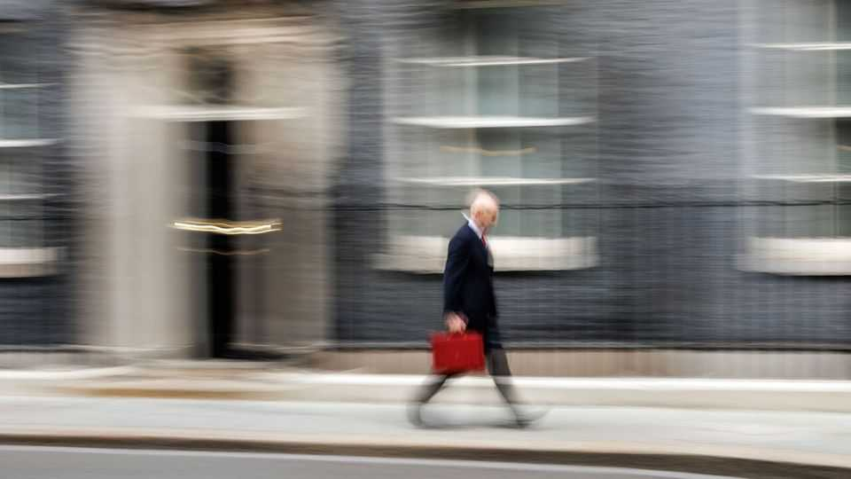
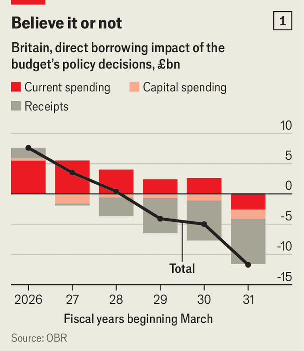
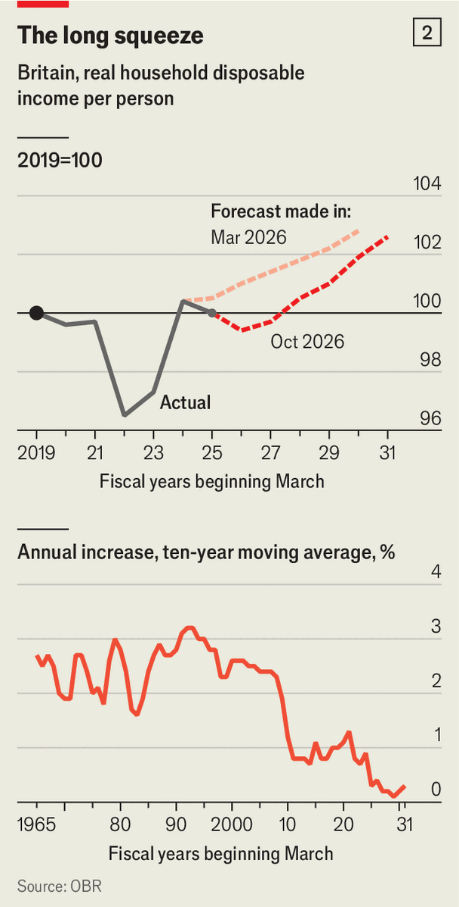

Britain’s defensive budget did little to tackle deeper problems
The government hopes to win voters over with small treats now and the promise of reform later

Oct 29th 2026
When Andy Burnham entered office in July, the football-mad prime minister promised to go on the attack. His government would oversee “the biggest changes in the last 40 years”. Britons fed up with the status quo would “start to believe again”. That ambition calls for a striker at the Treasury, a game-changing chancellor. Unfortunately John Healey’s first budget, on October 28th, was all defence. It dealt with the immediate worries: modest tax rises shored up the public finances, and even more modest handouts eased the cost of living. But the budget left the big problems, whether on reforming Britain’s broken tax system or finding the money for its spending ambitions, untouched.
To be fair, Mr Healey was playing on a boggy pitch. The Office for Budget Responsibility (OBR), a fiscal watchdog, cut its 2027 growth forecast from 1.6% to 1%, blaming the energy crisis caused by war in the Middle East. The conflict pushed estimated inflation for 2027 from 2% to 3.4%. Borrowing costs will be £12bn ($16bn) a year higher on average in the medium term. By 2031-32 debt-interest spending will consume 4.2% of GDP (£160bn a year), more than double the pre-pandemic level.
The chancellor’s game plan was to show “fiscal discipline” and give “Britain some breathing space on the cost of living”. On both counts, Mr Healey achieved short-term success but set himself up for long-term failure. The government is on track to meet its fiscal rules, with debt coming down and day-to-day spending covered by tax revenues by 2029-30. The deficit is forecast to fall by half, from 4.2% this year to 2.1% in 2029-30. If Mr Healey pulls this off, he will be doing much better than the French or the Americans.

Mr Healey chose to shrink his margin against the fiscal rules, to £15bn from £24bn in March. As the rules only bind in 2029-30, he snuck in higher spending early on (see chart 1). Holding the margin at even that level then required a medley of small, fiddly tax tweaks. Taxes on savings and property income will go up by two percentage points, raising £1bn a year in steady state. A time-limited surcharge on bank profits will raise £1.5bn. Gamblers and large operators of private-hire cars will also have to cough up. All these changes made the system messier, but none poses existential challenges to Britain’s competitiveness.
Although it is welcome that Mr Healey did not degrade the public finances further, he should not be mistaken as a paragon of fiscal responsibility. Debt is expected to be 96.7% of GDP in 2029-30, up from 95.5% now. If the government cannot stabilise debt even outside a crisis like the covid-19 pandemic, it will have less firepower when the next one hits.
Worse, few believe Labour will stick to its spending plans. Mr Healey delighted in setting a target to spend 3% of GDP on defence by 2030. (He could hardly have done otherwise, having resigned as defence secretary under Sir Keir Starmer over a refusal to set such a target.) He was hazy on how to pay for this important move, punting the decision to next year’s spending review. The OBR reckons that, under current plans, most departments face real-terms cuts of 2.6% a year in the last three years of the forecast. The government is unlikely to get that past its backbenchers—and Mr Burnham himself wants more money for priorities such as a National Care Service.

The story on the cost of living is similar. The budget continued Mr Burnham’s strategy of giving the electorate cheap goodies, like a mascot lobbing sweets into the stands at half-time. Most households will receive £100 to help with their heating bills. An energy tax-cut will be extended until July, with taxes on fuel also frozen until then. But although the public might temporarily enjoy a sugar rush, these measures will not disguise the fact that this is a grim period for living standards.
The OBR thinks that household disposable income will fall in real terms this year, and grow weakly thereafter (see chart 2). By the end of the decade it will be only 1% higher than before the pandemic. Ultimately it is economic growth, not handouts, that will improve living standards. The Prosperity Alliance, a pro-growth lobby stuffed with technocrats, calculates that if growth had continued along pre-2008 trends the median household would be £16,000 a year better off.
Yet the budget did little to improve the prospects for growth. There were some good measures, like a plan for building data centres more quickly and a greater focus on making cheap bills the foremost priority of energy policy. The devolution of tax-raising powers to local areas should also incentivise local politicians to push for growth. But Mr Healey could have gone much further. Britain’s sclerotic planning system, choc-a-bloc with veto points, remains mostly intact. The country’s sky-high visa fees put off the world’s brightest from joining British companies. Britons might have to wait until December to find out more about the government’s plans to move people from welfare to work.
The biggest disappointment was Mr Healey’s failure to reform Britain’s tax system, which disincentivises growth at every turn. He left stamp duty on home sales, which stops people moving to better jobs, untouched. He failed to remove the high marginal tax rates (like 62% for those earning between £100,000 and £125,140 a year) which stop people from working longer hours. If anything, the chancellor made the system more complicated. Pensioners on £13,000 a year now face a 53% marginal tax rate if they want to make a bit of money on the side. More small businesses will be exempt from commercial-property taxes, but adult gaming centres and vape shops are exempt from the exemption.
Blame for a lacklustre budget should ultimately be laid at the foot of the team captain, the prime minister. Mr Burnham hopes to win voters over with small treats now and the promise of radical reform later. That misunderstands how governing works. The time for big moves is early, while a government still has authority and years to let its policies pay off before an election. Mr Healey mounted a successful defence. But only goals win games. ■